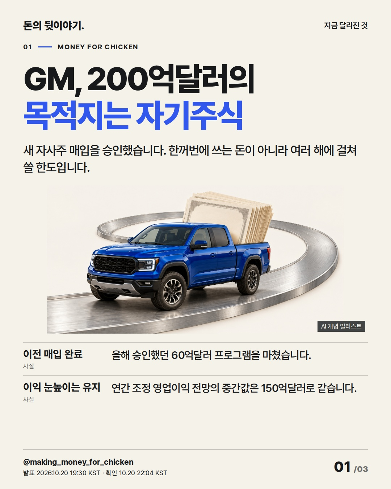
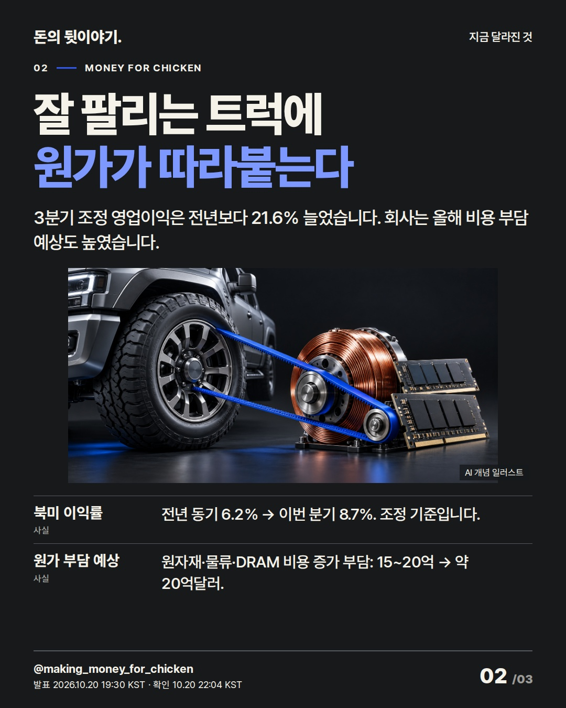
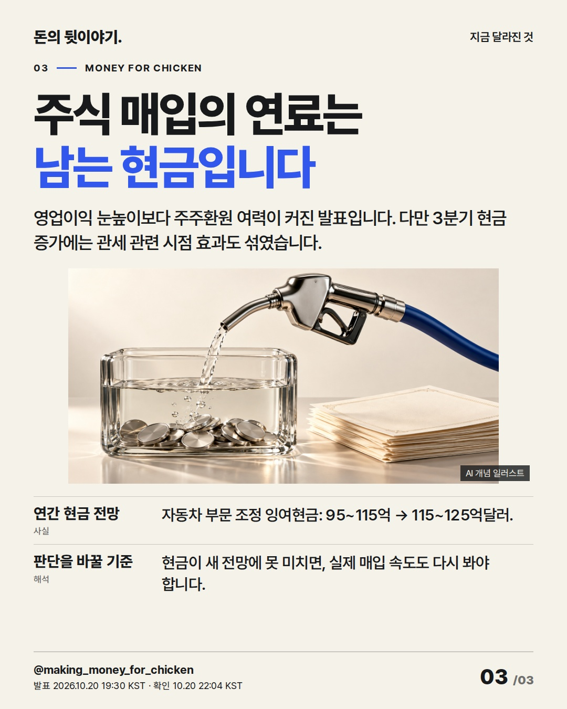

GM이 새로 승인한 200억달러의 목적지는 자기주식입니다. 커진 매입 한도 뒤에서 실제 집행을 뒷받침할 현금과 원가 부담을 짚습니다. #GM #미국주식 #자사주매입

새 자사주 매입을 승인했습니다. 한꺼번에 쓰는 돈이 아니라 여러 해에 걸쳐 쓸 한도입니다.
AI 생성 개념 일러스트 · 실제 현장이나 공식 제품 사진이 아닙니다.

3분기 조정 영업이익은 전년보다 21.6% 늘었습니다. 회사는 올해 비용 부담 예상도 높였습니다.
AI 생성 개념 일러스트 · 실제 현장이나 공식 제품 사진이 아닙니다.

영업이익 눈높이보다 주주환원 여력이 커진 발표입니다. 다만 3분기 현금 증가에는 관세 관련 시점 효과도 섞였습니다.
AI 생성 개념 일러스트 · 실제 현장이나 공식 제품 사진이 아닙니다.
{
"improvement": "10월 17일 관세·16일 TSMC·15일 베이지북·14일 UnitedHealth·Bumble 상세 원고와 표지를 비교했습니다. 글자만 이어지는 화면과 내용에 맞지 않는 사진을 줄이고 장마다 결정·비용·현금의 다른 이미지를 연결했습니다.",
"reason": "관세 글의 반복되는 단서와 TSMC 표지의 숫자 밀도를 줄이는 것이 목표입니다. GM은 새 매입 승인, 이익 유지, 현금 전망의 차이가 핵심이라 매출·EPS·배당·국내 수혜주 나열을 버렸습니다.",
"application": "표지는 '목적지'로 자사주 매입을 바로 설명하고, 2장은 실적과 비용, 3장은 현금 전망과 실제 집행 조건으로 전진합니다. 제목 후보 'GM, 200억달러의 목적지는 자기주식', '트럭이 번 돈은 어디로 가나', '자사주 매입의 연료는 남는 현금' 중 가장 구체적인 첫 안을 선택했습니다.",
"avoided_repetition": "200억달러는 표지에만, 영업이익 중간값은 첫 근거에만 두었습니다. 2장에는 비용, 3장에는 현금과 관세 시점 효과를 남겼습니다. 최근 5편과 같은 사건이 아니며 다음 편은 또 다른 비유·주장을 고릅니다."
}투자 참고용 · 매수·매도 권유 아님.